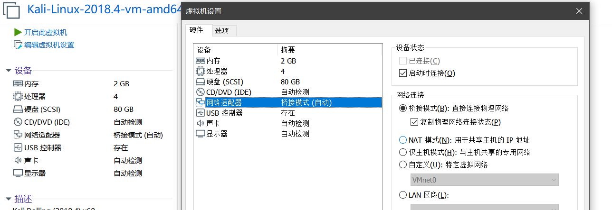
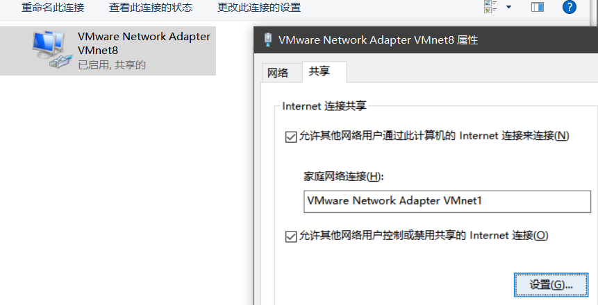
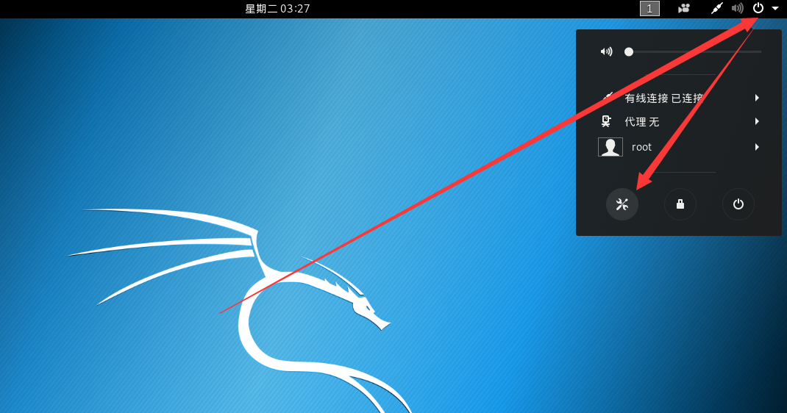
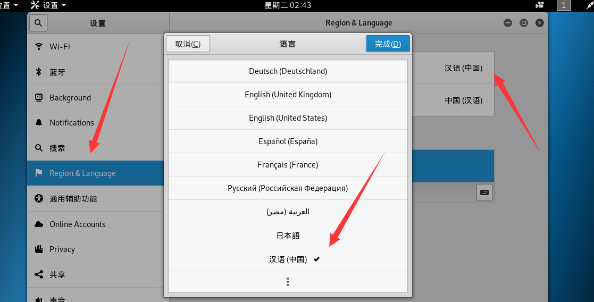

前言
点进来的自然都知道Kali的威力，那就话不多说，直接动手吧。
下载
这里选择Kali Linux VMware Images->Kali Linux Vm 64 Bit 7z
因为文件本身比较大，所以笔者选用PanDownload下载。
有趣的是，用了两天就发现自己的账号被限流地很惨hhhh，所以大家用之前记的创个小号。
安装
安装过程

[1]下载完成后进行解压，并记下当前解压目录。
[2]打开VMware Workstation
[3]选项卡[T]->主页->打开虚拟机->选择解压目录->Kali-Linux-2018.4-vm-amd64.vmx
[4]进入Kali，基本按Enter就可以了，默认账号密码如下
1 | Username:root |
VMware Tools

(安装后可以让你的虚拟机更加流畅)
[1]成功开机，开始安装VMware Tools
[2]虚拟机(M)->安装VMware Tools(T)->系统界面上方自动弹出VMware Tools->点击打开，全部文件都复制到主目录
[3]打开终端(Terminal)
1 | root@kali:~# ls |
配置
基本配置
(要在关机状态下配置)
[1] 编辑虚拟机设置
[2] 内存/处理器/硬盘自视情况而定，因为笔者经常用到所以选择的是2GB内存/4核处理器/80GB存储

[3]网络适配器->桥接模式->复制物理网络连接状态(这里给虚拟机联网)
[4]打开网络和Internet设置->网络适配器选项->VMware Virtual Ethernet Adapter for VMnet8->属性->共享里面全勾

中文设置
[1] 设置(Settings)

[2] Region & Language->中文(Chinese)

总结
安装过程不算复杂，重要在网速够快。接下来几篇文章我可能会介绍VMware Workstation安装MAC OS等其他操作系统的具体步骤。